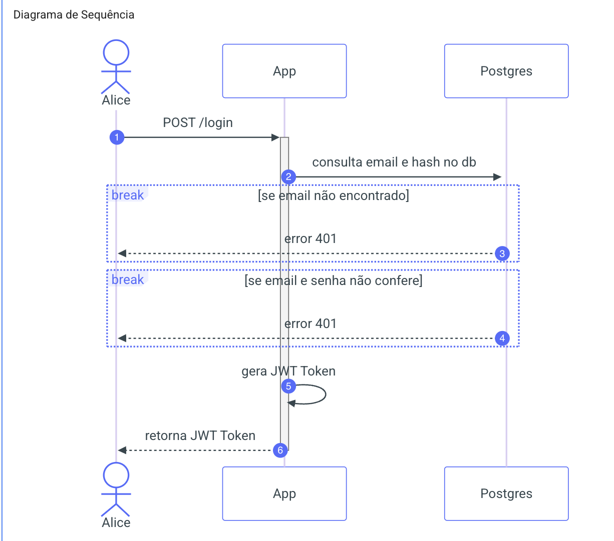
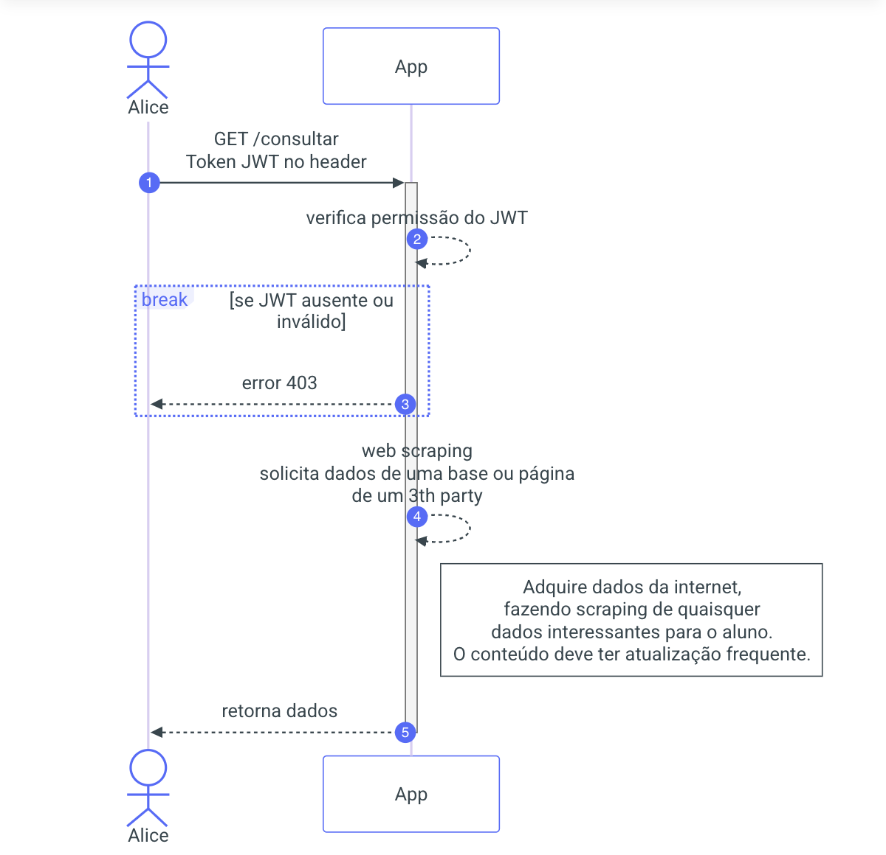
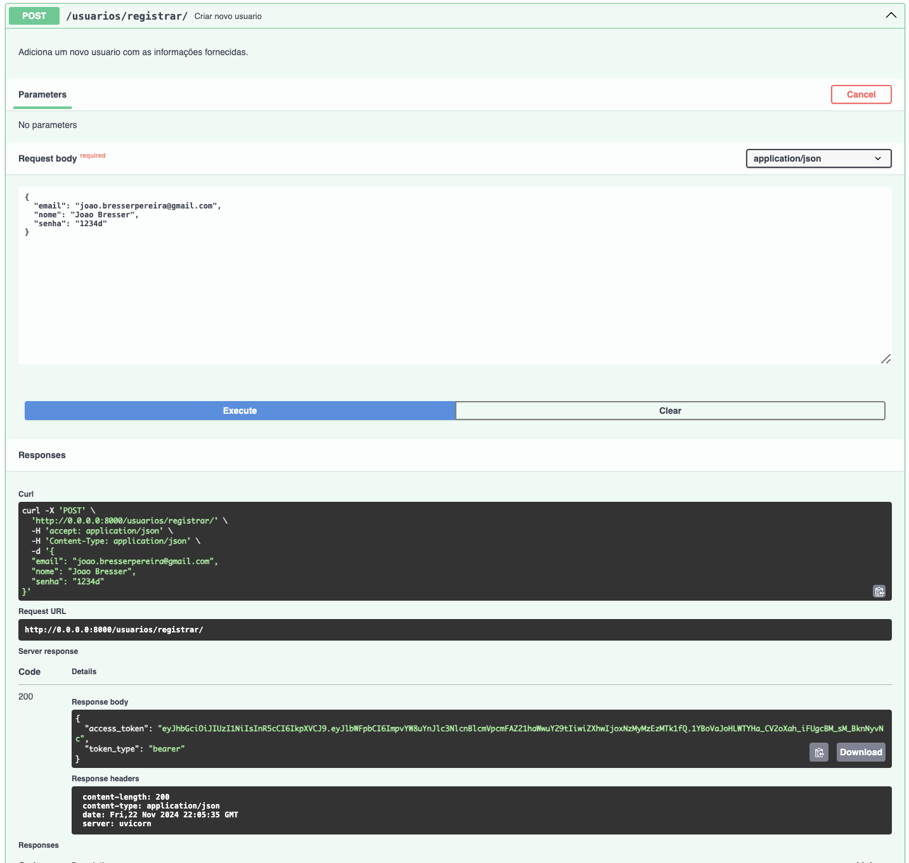
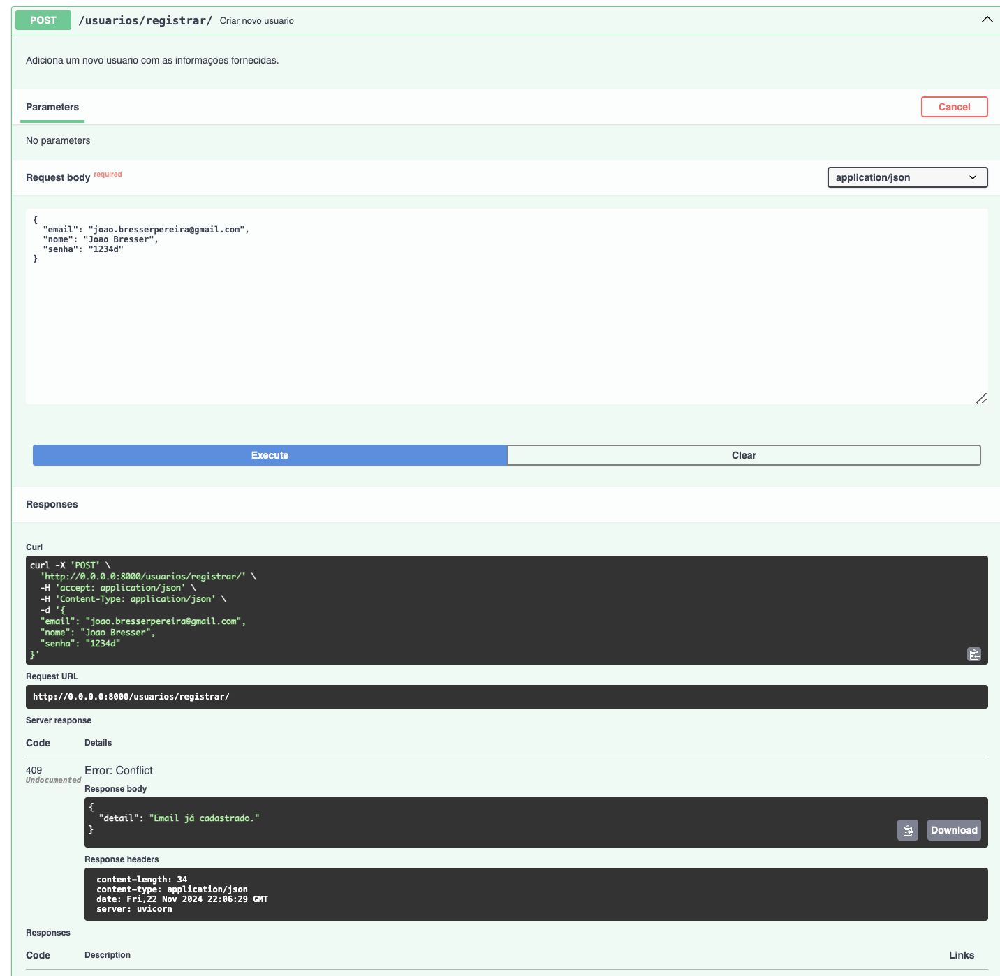
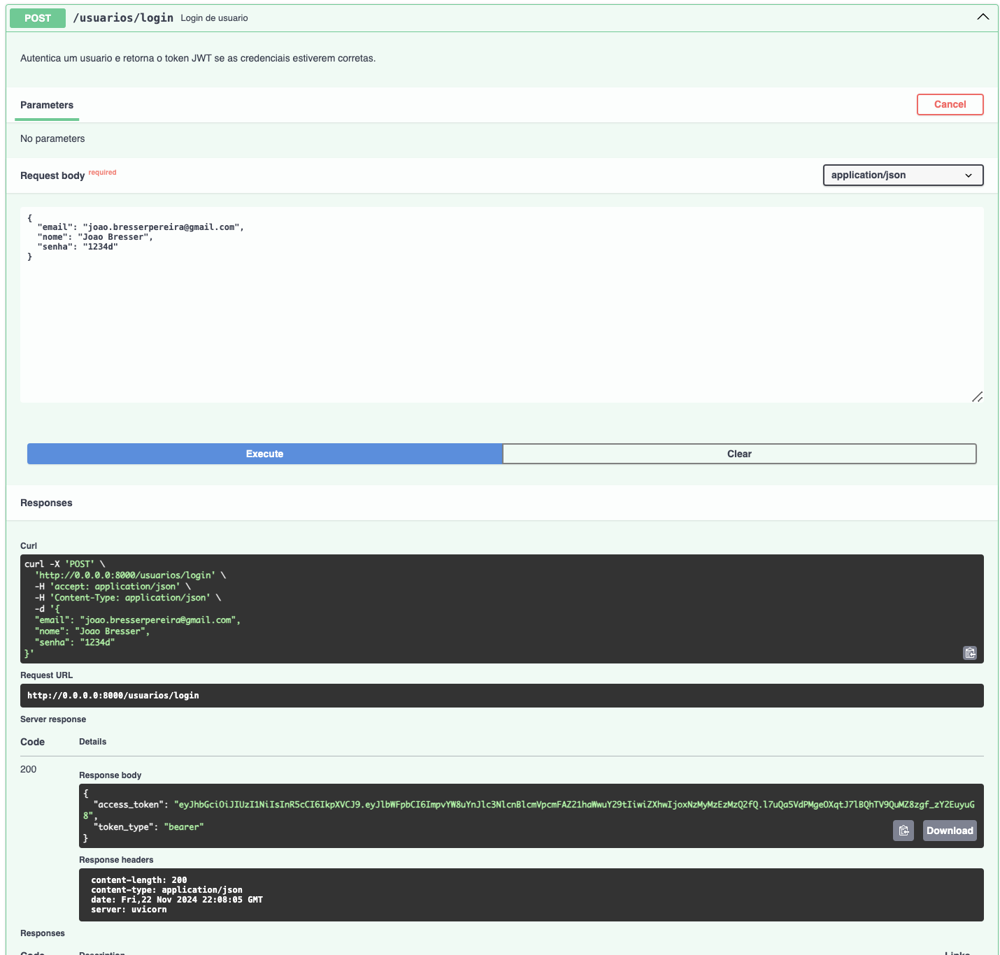
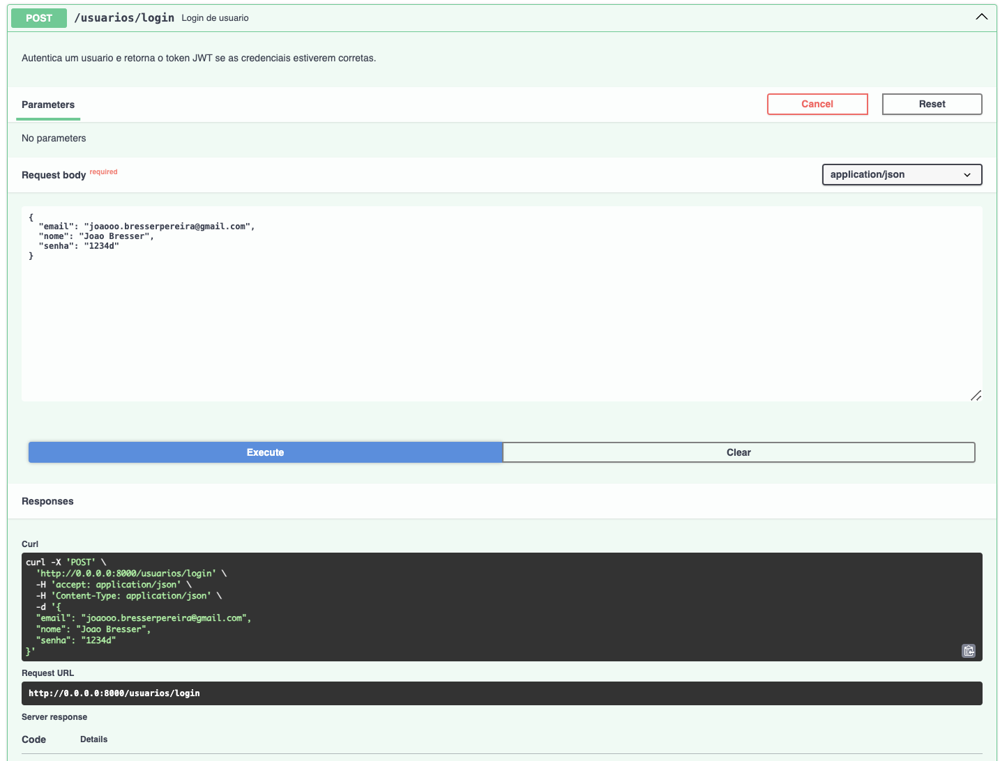
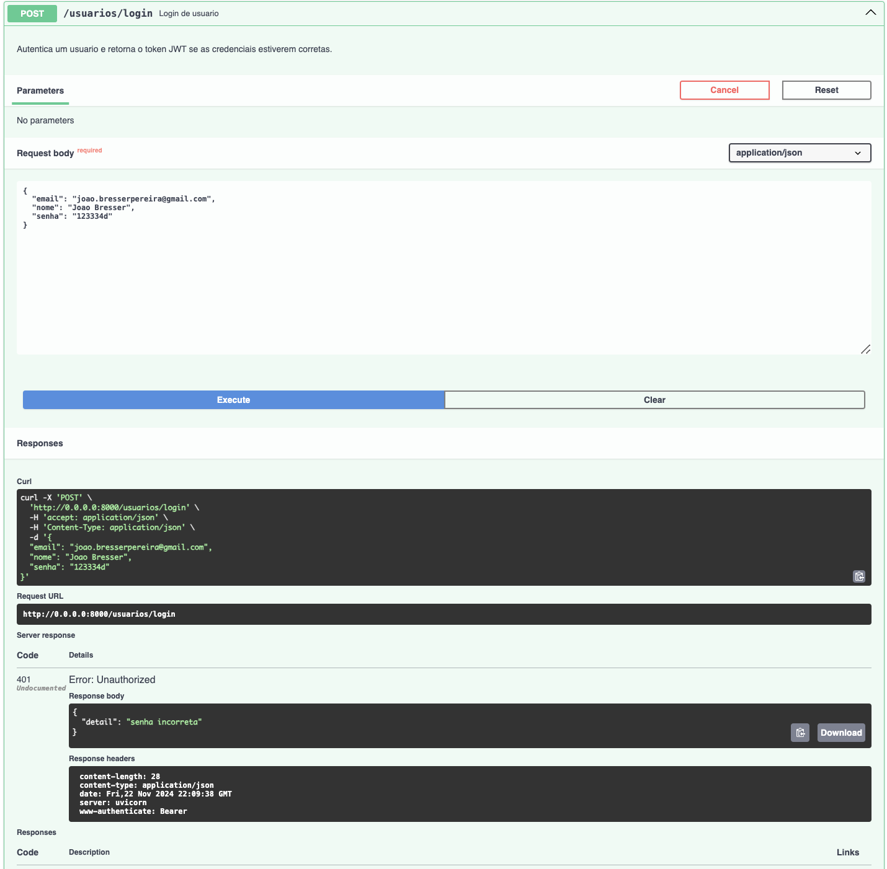
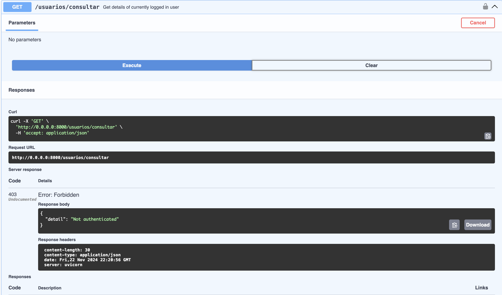
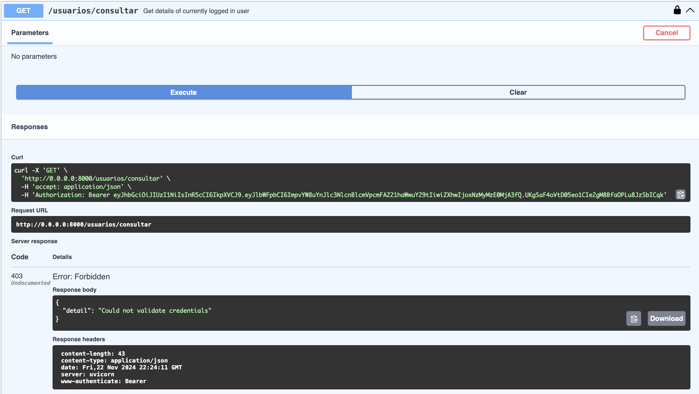
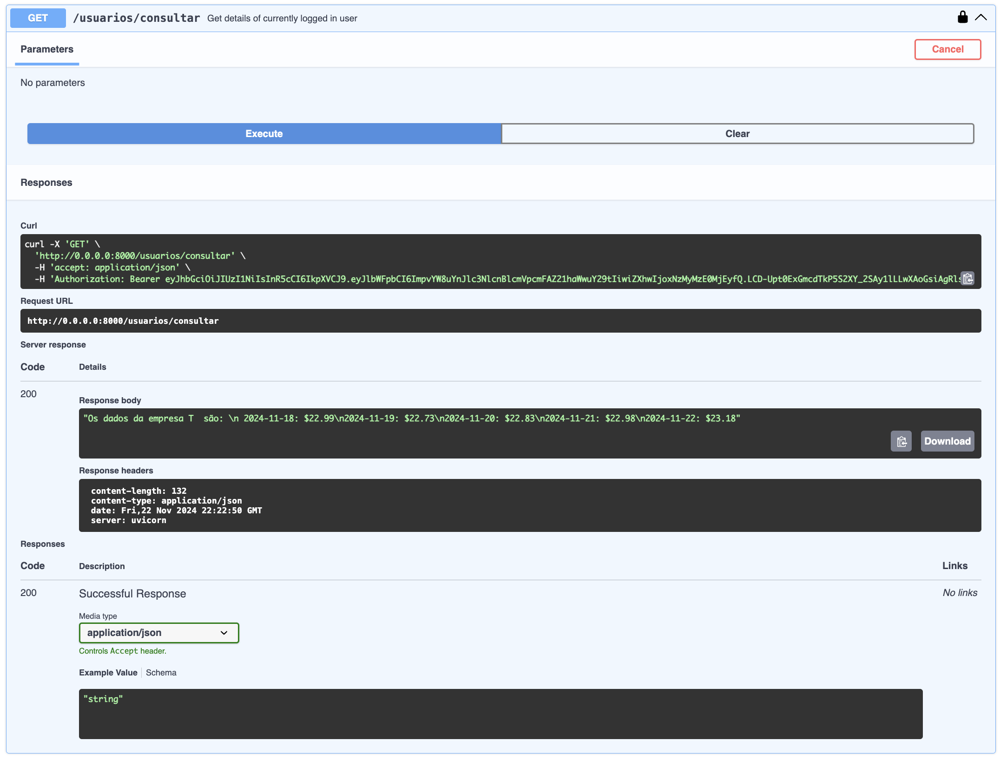

Documentação da API
A documentação da APi também pode ser obtida pelo swagger docs:
é possivel encontrála no seguinte link:
Esta API permite o gerenciamento de usuários, autenticação e acesso a informações de mercado.
Endpoints
1. Obter todos os usuários
- URL:
/usuarios/ - Método:
GET - Parâmetros de Query:
offset(int): Define o deslocamento para os resultados (padrão:0).limit(int): Define o número máximo de resultados a serem retornados (máximo:100).- Resposta:
- Status:
200 OK - Corpo: Lista de usuários no formato do esquema
UserSchema. - Tags:
Usuarios - Descrição: Retorna a lista de todos os usuários disponíveis (cadastrados).
2. Registrar um novo usuário
- URL:
/registrar/ - Método:
POST - Parâmetros do Corpo:
- Objeto do tipo
UserSchemacontendo as informações do usuário. - Resposta:
- Status:
201 Created - Corpo: Objeto
Tokencom o token JWT gerado para o novo usuário. - Erros:
- Status:
409 Conflict– Caso o e-mail já esteja cadastrado. - Tags:
Usuarios -
Descrição: Adiciona um novo usuário com as informações fornecidas.

3. Login de usuário
- URL:
/login - Método:
POST - Parâmetros do Corpo:
- Objeto do tipo
UserSchemaValidatecontendoemailesenha. - Resposta:
- Status:
200 OK - Corpo: Objeto
Tokencom o token JWT gerado. - Erros:
- Status:
401 Unauthorized– Caso o e-mail não esteja cadastrado ou a senha esteja incorreta. - Tags:
Usuarios - Descrição: Autentica um usuário e retorna o token JWT se as credenciais estiverem corretas. 
4. Obter informações do usuário autenticado
- URL:
/data - Método:
GET - Cabeçalhos:
Authorization: Bearer <token>- Resposta:
- Status:
200 OK - Corpo: Dados históricos de preços de fechamento da empresa "T".
- Erros:
- Status:
401 Unauthorized– Caso o token esteja expirado ou seja inválido. - Status:
403 Forbidden– Caso o esquema de autenticação seja inválido. - Status:
404 Not Found– Caso o usuário não seja encontrado. - Tags:
Usuarios - Descrição: Retorna detalhes históricos da empresa "T" (via Yahoo Finance) para o usuário autenticado. 
5. Consultar informações do usuário autenticado
- URL:
/consultar - Método:
GET - Cabeçalhos:
Authorization: Bearer <token>- Resposta:
- Status:
200 OK - Corpo: Dados históricos de preços de fechamento da empresa "T".
- Formato: Uma string contendo as datas e os preços de fechamento dos últimos 5 dias.
- Erros:
- Status:
401 Unauthorized– Caso o token esteja expirado ou inválido. - Status:
403 Forbidden– Caso o esquema de autenticação seja inválido. - Status:
404 Not Found– Caso o usuário autenticado não seja encontrado. - Tags:
Usuarios - Descrição: Retorna os dados históricos de mercado da empresa "T" (via Yahoo Finance) para o usuário atualmente autenticado.
Testagem endpoints
Registrar
Registrar Funcionando

Registrar já cadastrado

Login
Login Funcionando

Login com email não encontrado

Login senha não encontrada

Consultar
Consultar sem login

Conulta credenciais invalidas

Consulta com login
